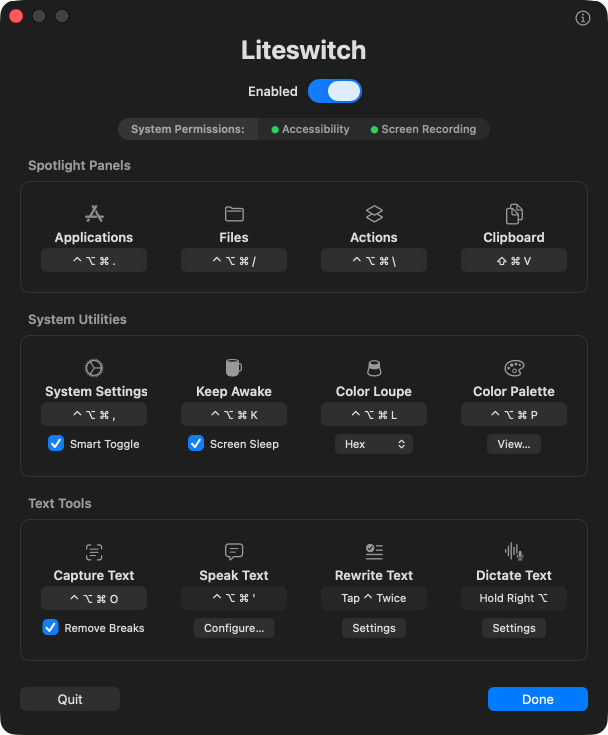

The most powerful things macOS can do are often the hardest to reach — Liteswitch puts them at your fingertips.
macOS 26 · Apple Silicon · 560 KB · signed & notarized · free, no account, no subscription

Each one is a shortcut onto something macOS already does — the Spotlight panels, then the system utilities, then the text tools. The chord on each card is the default; every one is yours to change.
Spotlight's app grid
Search docs and folders only
Search and run any of your Shortcuts
View and search clipboard history
Open Settings, press again to go back
Stop your Mac going to sleep
Sample any pixel and copy it as code
Every color you've picked, ready to reuse
Copy the text out of anything on screen
Clean up, restyle, shorten or translate
Hold a key and talk, let go and it stops
Have your selection read aloud
macOS ships the hard part and leaves out the key. That gap is a whole category of paid utilities — apps that bundle their own engine, or their own subscription, to sell you a keystroke.
caffeinate usesA single main.swift, no dependencies, compiled with swiftc. The whole app is 560 KB.
OCR, dictation and rewriting all run on your Mac. No account, no API key, no telemetry.
Each tool covers a gap macOS misses by a hair. When a release closes one, the tool comes out.
Accessibility for the tools that synthesize keystrokes, Screen Recording for Capture Text, Apple Intelligence for Rewrite Text — each requested the first time you use it, and never before.